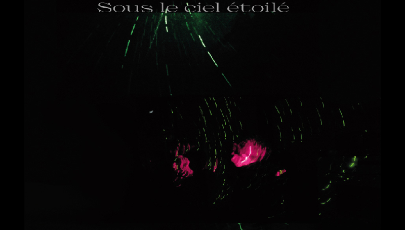

Lélé Leloutre



Projet photographique
mené autour de la question de la narration en photographie
Le principe est de créer une grande photo qui se dévoile et finit par se séquencer en photos distinctes. Lae spectateur·ice le découvre petit à petit en faisant défiler l’image, qui se constitue d’images floues, de motifs lumineux répétitifs abstraits. L’espace est investi entièrement, afin que les contours définis des photos soient invisibles dans un premier lieu.